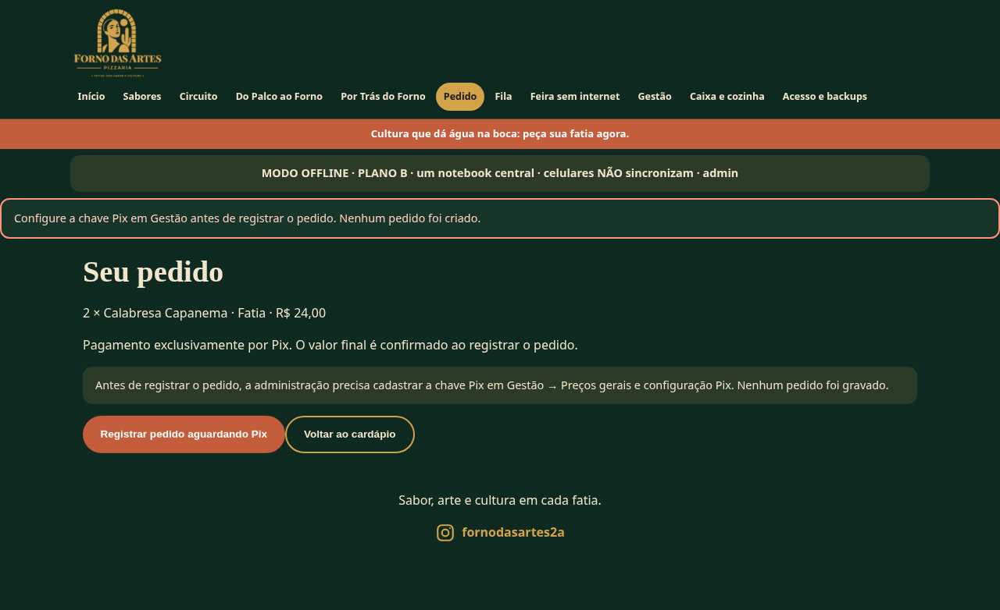
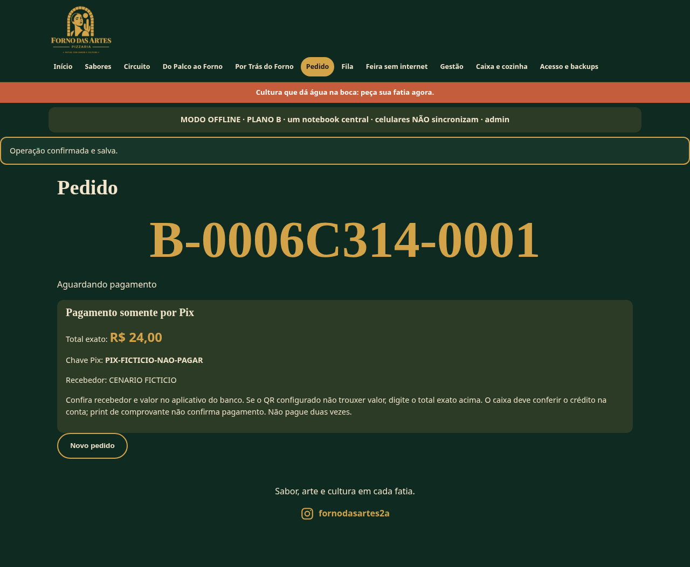
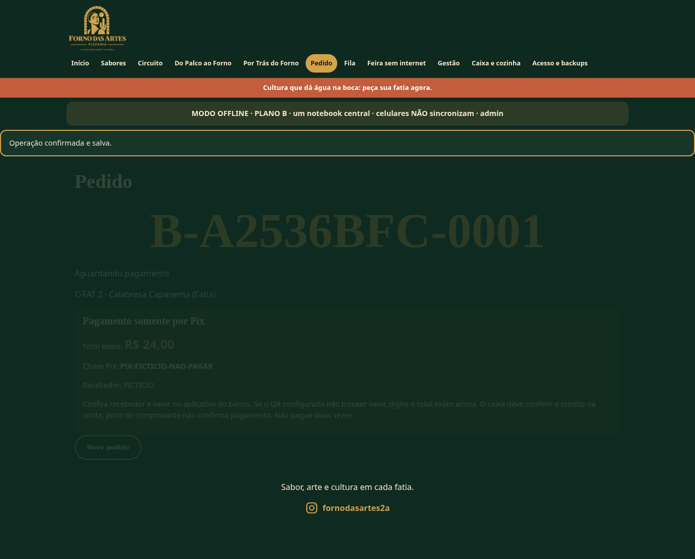
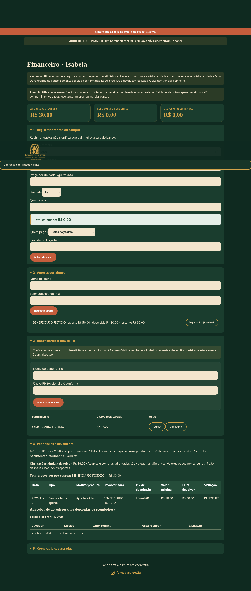
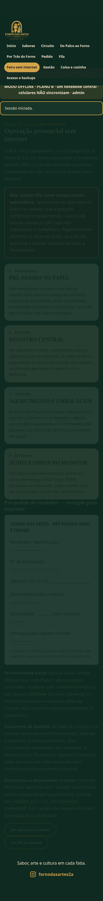

Antes · bloqueio sem Pix

Somente dados fictícios em origens 8820/8821. Não é banco da feira, teste bancário ou sincronização entre celulares.
Relatório · 44 testes Node · 12 cenários de navegador · Reprodução antes




